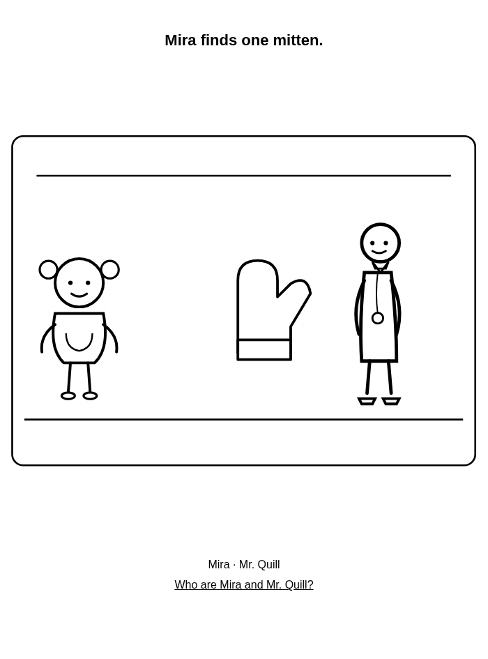
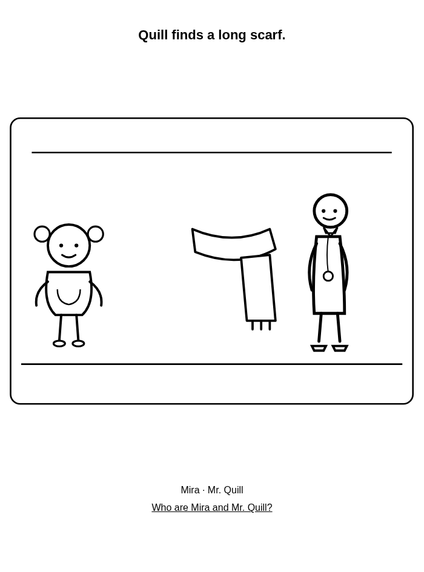
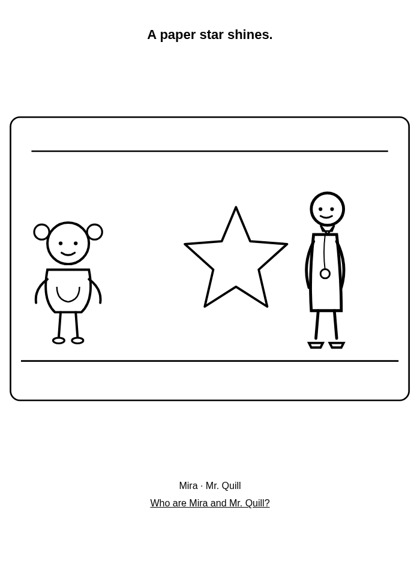
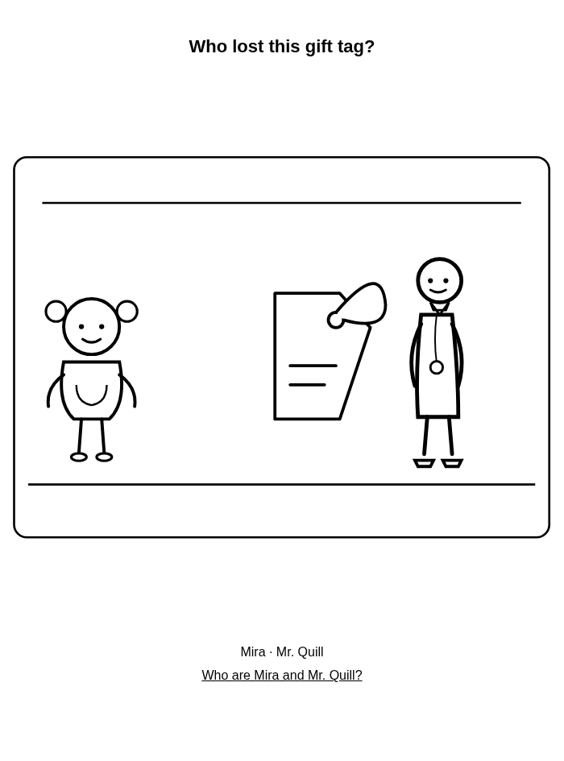
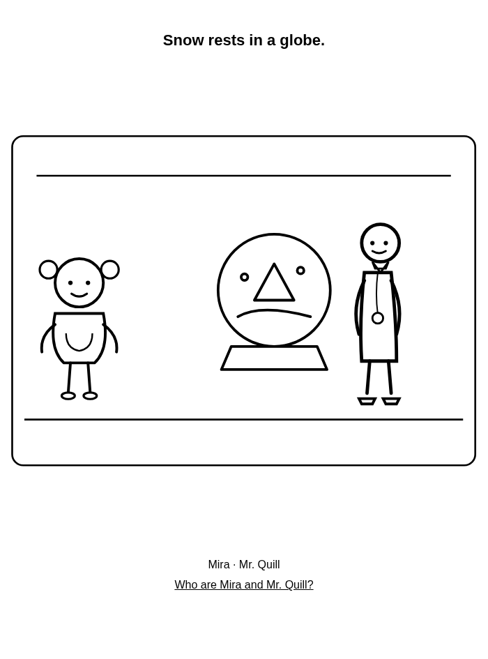
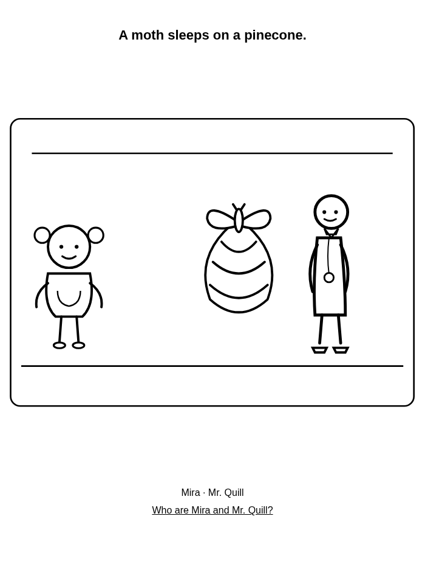

Free Christmas coloring pages for kids 4–8 – printable PDF
Six free Christmas and winter coloring pages with Mira and Mr. Quill. Print on A4 or US Letter for home or school.
For families and teachers: print at 100% in grayscale. Use crayons. Free for home and classroom use.
All 6 pages
A4 PDF · US Letter PDF





Who are Mira and Mr. Quill?
Mira is curious. Mr. Quill helps her slow down and notice little things. Watch their free cartoon together.
Who are Mira and Mr. Quill?